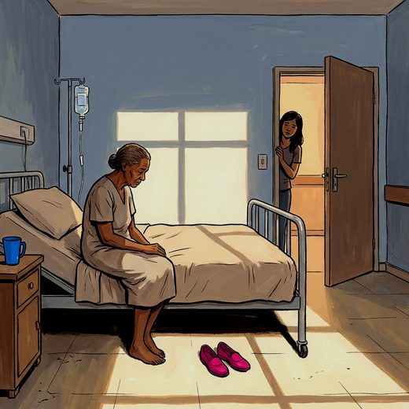

Consulta rápida à beira do leito
Condutas, doses e interações.
Referências da aula · 10
- Hao X, Zhang H, Zhao X, Peng X, Li K. Risk factors for hospitalization-associated disability among older patients: a systematic review and meta-analysis. Ageing Res Rev. 2024;101:102516. PMID 39332713. doi:10.1016/j.arr.2024.102516.PubMedDOI
- Creditor MC. Hazards of hospitalization of the elderly. Ann Intern Med. 1993;118(3):219-23. PMID 8417639. doi:10.7326/0003-4819-118-3-199302010-00011.PubMedDOI
- Gill TM, Allore HG, Holford TR, Guo Z. Hospitalization, restricted activity, and the development of disability among older persons. JAMA. 2004;292(17):2115-24. PMID 15523072. doi:10.1001/jama.292.17.2115.PubMedDOI
- Covinsky KE, Pierluissi E, Johnston CB. Hospitalization-associated disability: "She was probably able to ambulate, but I'm not sure". JAMA. 2011;306(16):1782-93. PMID 22028354. doi:10.1001/jama.2011.1556.PubMedDOI
- Moraes EN, Marino MCA, Santos RR. Principais síndromes geriátricas. Rev Med Minas Gerais. 2010;20(1):54-66.
- Cruz-Jentoft AJ, Bahat G, Bauer J, Boirie Y, Bruyère O, Cederholm T, et al. Sarcopenia: revised European consensus on definition and diagnosis. Age Ageing. 2019;48(1):16-31. PMID 30312372. doi:10.1093/ageing/afy169.PubMedDOI
- Harwood RH, Foss AJE, Osborn F, Gregson RM, Zaman A, Masud T. Falls and health status in elderly women following first eye cataract surgery: a randomised controlled trial. Br J Ophthalmol. 2005;89(1):53-9. PMID 15615747. doi:10.1136/bjo.2004.049478.PubMedDOI
- 2023 American Geriatrics Society Beers Criteria® Update Expert Panel. American Geriatrics Society 2023 updated AGS Beers Criteria® for potentially inappropriate medication use in older adults. J Am Geriatr Soc. 2023;71(7):2052-81. PMID 37139824. doi:10.1111/jgs.18372.PubMedDOI
- O'Mahony D, Cherubini A, Guiteras AR, Denkinger M, Beuscart JB, Onder G, et al. STOPP/START criteria for potentially inappropriate prescribing in older people: version 3. Eur Geriatr Med. 2023;14(4):625-32. PMID 37256475. doi:10.1007/s41999-023-00777-y.PubMedDOI
- Montero-Odasso M, van der Velde N, Martin FC, Petrovic M, Tan MP, Ryg J, et al. World guidelines for falls prevention and management for older adults: a global initiative. Age Ageing. 2022;51(9):afac205. PMID 36178003. doi:10.1093/ageing/afac205.PubMedDOI
Documentos oficiais
Leis e publicações do Ministério da Saúde sobre o cuidado da pessoa idosa, de acesso livre.
Abrir os documentos